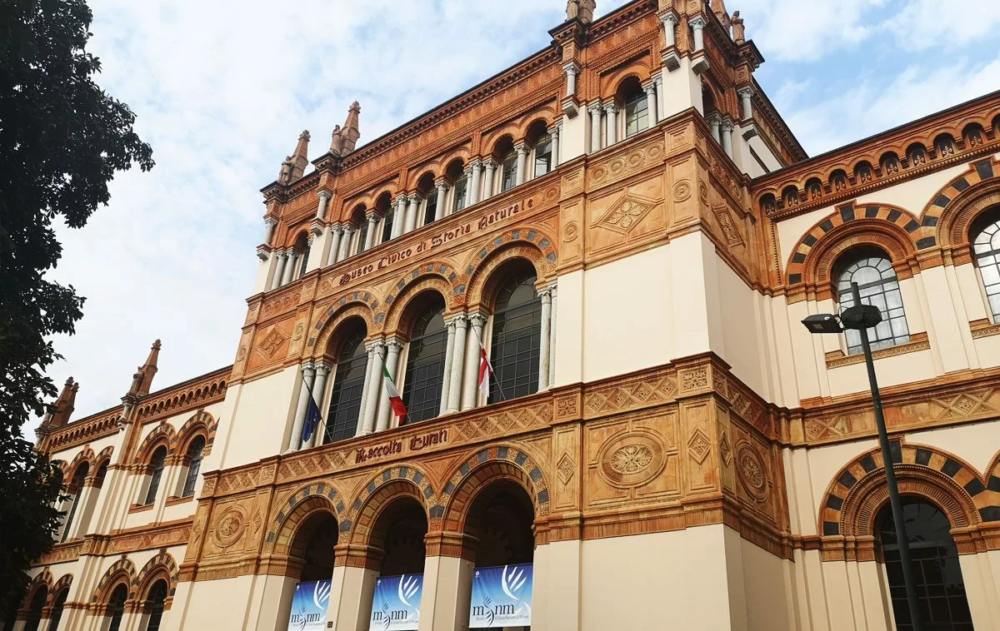

Natural History Museum
The Museo Civico di Storia Naturale di Milano (Milan Natural History Museum) is a museum in Milan, Italy. It was founded in 1838 when naturalist Giuseppe de Cristoforis donated his collections to the city. Its first director was Giorgio Jan. The Museum is located within a 19th-century building in the Indro Montanelli Garden, near the historic city gate of Porta Venezia. The structure was built between 1888 and 1893 in Neo-Romanesque style with Gothic elements. The museum is divided into five different permanent sections: Mineralogy (with a large collection of minerals from all over the world); Paleontology (with several fossils of dinosaurs and other prehistoric organisms); Natural History of Man (dedicated to the origins and evolution of humans with a particular attention to the relationship of the latter with the environment); Invertebrate Zoology (dedicated to mollusks, arthropods and entomology); and Vertebrate Zoology (dedicated to vertebrates, both exotic and European). The museum also exhibits the largest Italian collection of full size dioramas (over 100) that allow visitors to observe some peculiar aspects of various ecosystems.
The Museo Civico di Storia Naturale di Milano (Milan Natural History Museum) is a museum in Milan, Italy. It was founded in 1838 when naturalist Giuseppe de Cristoforis donated his collections to the city. Its first director was Giorgio Jan. The Museum is located within a 19th-century building in the Indro Montanelli Garden, near the historic city gate of Porta Venezia. The structure was built between 1888 and 1893 in Neo-Romanesque style with Gothic elements. The museum is divided into five different permanent sections: Mineralogy (with a large collection of minerals from all over the world); Paleontology (with several fossils of dinosaurs and other prehistoric organisms); Natural History of Man (dedicated to the origins and evolution of humans with a particular attention to the relationship of the latter with the environment); Invertebrate Zoology (dedicated to mollusks, arthropods and entomology); and Vertebrate Zoology (dedicated to vertebrates, both exotic and European). The museum also exhibits the largest Italian collection of full size dioramas (over 100) that allow visitors to observe some peculiar aspects of various ecosystems.
